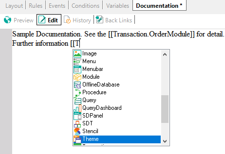

Creates an object with the only purpose to write documentation. It is saved under the Documentation node present in the KB Explorer. Application documentation is an important part of your Knowledge Base. GeneXus provides a Wiki-style Documentation editor and repository. Wiki-style documentation has been used and adopted by the IT community worldwide. Documents are edited with an (almost) WYSIWYG editor. They can include links to other documents, attributes, objects, etc. in your Knowledge Base. Files can also be stored in the Knowledge Base as part of your documentation. Remember you can use the [[ObjectName|Description]] syntax to relate documents within the KB Documentation and Help.  See also |